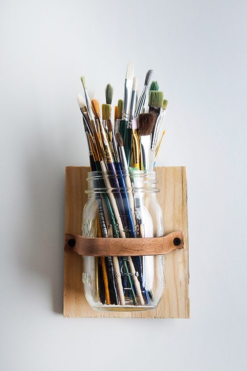
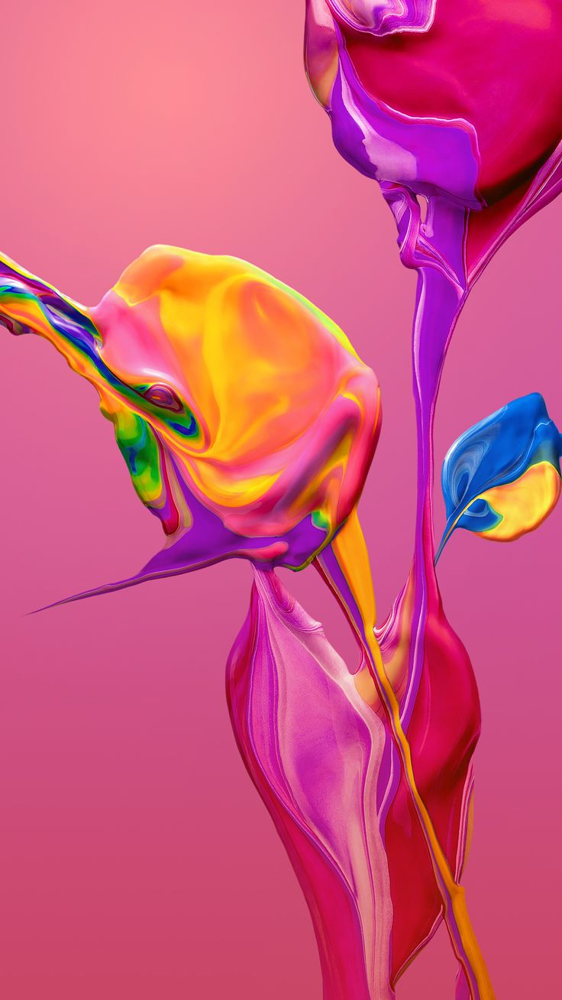
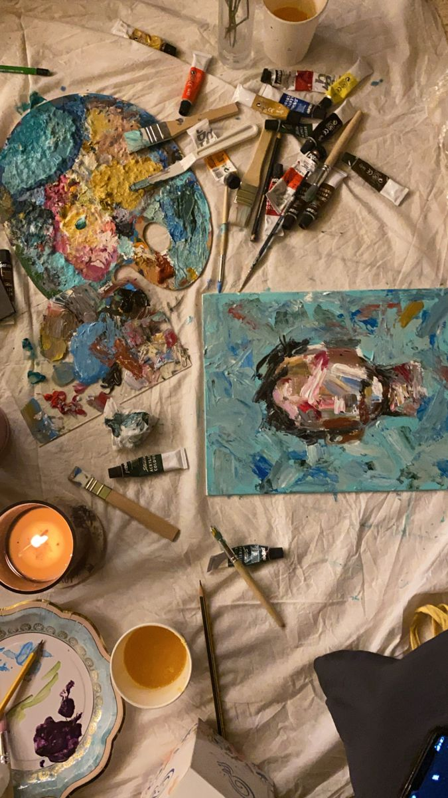
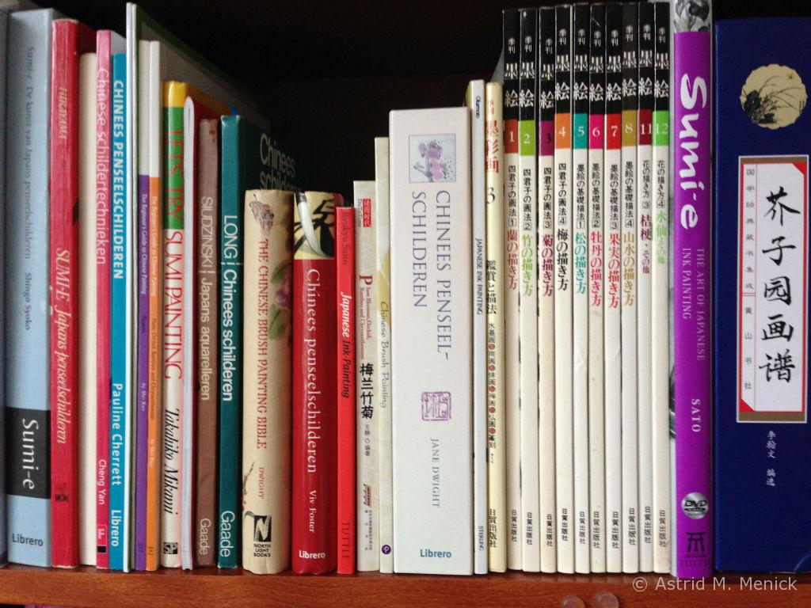
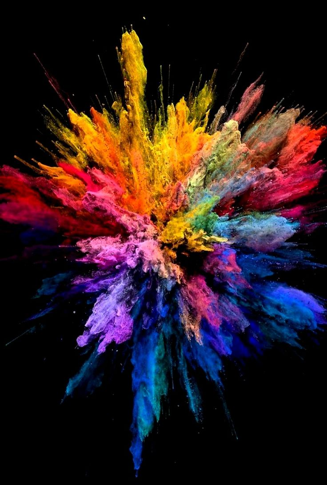

Oefenen voor beginners
Als je net begint met schilderen, is het slim om te starten met eenvoudige en goedkope materialen. Begin met basisspullen zoals goedkope verf en penselen. Dit is perfect om mee te oefenen en je hoeft je geen zorgen te maken als het niet meteen perfect is. Vervolgens is het handig om inspiratie te vinden die makkelijk voor je is. Denk aan dingen die je blij maken of waar je een goed gevoel bij hebt. Het kan een simpel voorwerp zijn dat je dagelijks ziet of iets waar je echt van houdt. Deze makkelijke inspiratie helpt je om in de flow te komen. Belangrijk is om te schilderen wat je leuk vindt. Kies onderwerpen waar je enthousiast over bent. Als je plezier hebt in wat je doet, zal het schilderen veel gemakkelijker en leuker zijn. Je zult ook merken dat je creativiteit meer gaat stromen. Regelmatig oefenen is de sleutel tot vooruitgang. Neem de tijd om regelmatig te schilderen. Het hoeft niet elke dag te zijn, maar hoe meer je oefent, hoe sneller je schildervaardigheden zullen groeien. Het is normaal als het in het begin niet meteen perfect is. Het gaat erom dat je leert en geniet van het proces. Laat je gevoel spreken tijdens het schilderen. Maak je niet te druk als iets niet helemaal klopt. Het belangrijkste is dat je plezier hebt en dat je schildert met passie. Als je schildert vanuit je gevoel, zul je merken dat je unieke stijl naar voren komt. Door veel te schilderen, zul je merken dat je talent groeit. Je wordt beter naarmate je meer ervaring opdoet. Dus, laat je niet ontmoedigen als iets in het begin lastig lijkt. Blijf oefenen, blijf genieten en je zult zien dat je schilderkunst zich snel ontwikkelt. Veel succes en veel schilderplezier!🖌️🖼️
Tips om veelvoorkomende fouten te voorkomen
Wanneer je net begint met schilderen, gebeuren er soms dingen waar je van kunt leren. Eén veelvoorkomende fout is te veel verf gebruiken. Het is net als te veel saus op je eten doen het kan rommelig worden. Begin met een klein beetje verf en voeg meer toe als je nodig hebt. Zo blijft het netjes en kun je beter bepalen hoe het eruit komt te zien.
Een ander ding om op te letten is de compositie, hoe je dingen op je schilderij plaatst. Als het er een beetje raar uitziet, is het handig om eerst een snelle tekening te maken. Bedenk waar je dingen wilt hebben, zodat het er goed uitziet en mensen het begrijpen.
≈Dan hebben we nog kleuren kiezen. Soms gebruiken mensen te veel verschillende kleuren, waardoor het een beetje verwarrend wordt. Het is zoals het kiezen van kleding je wilt niet te veel kleuren tegelijk dragen. Kies een paar kleuren die goed bij elkaar passen en probeer wat variaties. Zo wordt het mooi en simpel.
Onthoud, iedereen maakt wel eens foutjes. Het belangrijkste is dat je ervan leert en doorgaat met schilderen. Elke keer als je schildert, word je beter. Dus, geniet van het schilderen en wees niet bang om te experimenteren!😊🎨
Onderhoud van materialen
Laten we beginnen met kwasten schoonmaken. Nadat je klaar bent met schilderen, neem je de tijd om je kwasten schoon te maken. Dit doe je met water en een beetje zeep. Zorg ervoor dat alle verf uit de haren gaat. Het is als een douche voor je kwasten, zodat ze fris blijven voor je volgende schilderavontuur.
Nu, laten we praten over de juiste opslag van verf en penselen. Verf en penselen houden niet van te veel zonlicht of extreme temperaturen. Bewaar ze op een koele, droge plek, zoals een vriendelijke schuilplaats voor je spullen. Dan blijven ze in goede conditie en klaar voor gebruik wanneer je zin hebt om te schilderen.
En vergeet niet het belang van een schoon werkgebied. Een opgeruimde plek is als een magische speeltuin voor je creativiteit. Ruim je rommel op na het schilderen, zodat je de volgende keer gemakkelijk kunt beginnen. Het is net als het hebben van een schone lei voor nieuwe ideeën!
Dus, onthoud: geef je kwasten een douche, geef je verf en penselen een fijn thuis, en houd je werkplek netjes. Dan blijven je schilderspullen gelukkig en kun jij vol plezier blijven schilderen! 🎨✨
Hulpbronnen voor verdere studie
Als je meer wilt leren over schilderen, zijn er allerlei handige dingen die je kunt gebruiken. Ten eerste, boeken over schildertechnieken, zoals die van Gemma Guasch, zijn als schatkisten vol tips en trucs waarmee je ontdekt hoe je verschillende dingen op je schilderij kunt maken.
Daarnaast zijn er online tutorials en video's. Deze zijn als vriendelijke gidsen die je stap voor stap laten zien hoe je dingen kunt doen. Het is net alsof je een slimme vriend hebt die naast je staat en je helpt terwijl je schildert.
En, heb je ooit gedacht aan lokale kunstlessen en workshops? Dat zijn als leuke feestjes waar je samen met andere mensen kunt schilderen. Een leraar zal je helpen, en je kunt nieuwe vrienden ontmoeten die ook van schilderen houden. Het is een geweldige manier om samen creatief te zijn.
Dus, of je nu een boek van Gemma Guasch opent, een video bekijkt, of naar een les gaat, er zijn zoveel manieren om meer te leren. Het belangrijkste is dat je plezier hebt en ontdekt wat jij het leukst vindt. Dus, op naar het avontuur van leren en schilderen!📚🌈
Jouw vragen zijn welkom!
Heb je na het lezen zin om meer over schilderen te weten? Als je vragen hebt of gewoon wil praten over schilderen, laat gerust wat van je horen! Ga naar de contactpagina en stuur me een berichtje. Ik vind het leuk om over schilderen te praten en hoop snel van je te horen! 🎨📬